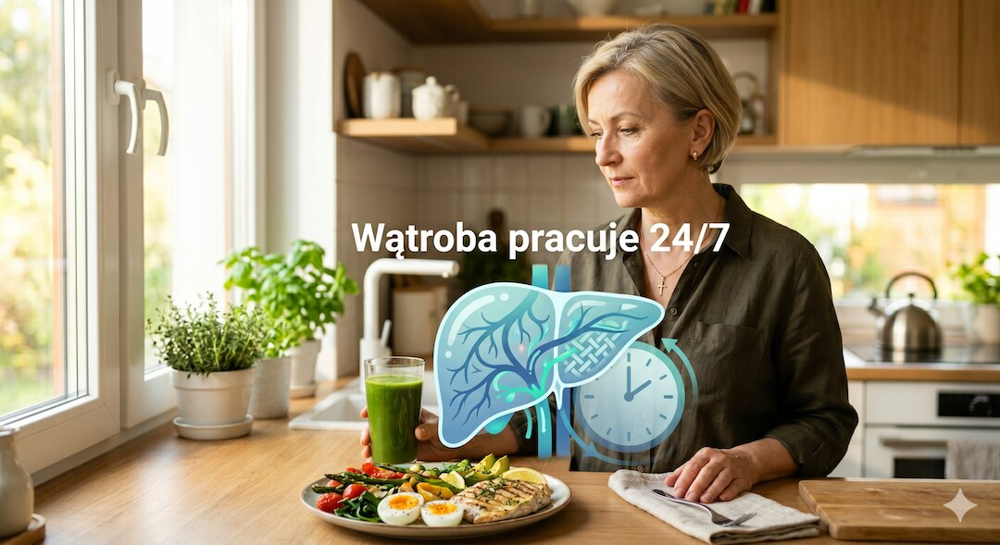
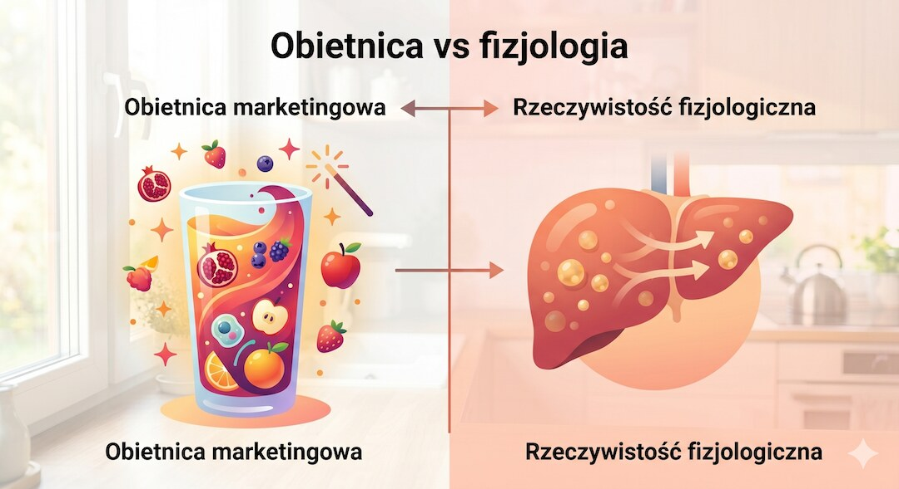

Detoks sokowy wygląda niewinnie: kilka dni zielonych soków, obietnica lekkości i hasło, że wątroba wreszcie odpocznie. Problem w tym, że zdrowa wątroba nie potrzebuje resetu sokiem, a ciało po 50-tce szczególnie źle znosi kilka dni niemal bez białka.
Szybka odpowiedź
Detoks sokowy to mit, bo u osób po 50-tce zdrowa wątroba, nerki i jelita oczyszczają organizm bez przerwy przez całą dobę, a kilka dni na samych sokach dostarcza mało białka, dużo płynnej fruktozy, szybki spadek wody zamiast tłuszczu i w praktyce może sprzyjać utracie mięśni.
Kluczowe wnioski
- Zdrowa wątroba, nerki i jelita pracują cały czas — sok nie włącza trybu oczyszczania.
- Szybki spadek masy po detoksie to głównie woda i glikogen, a nie toksyny ani trwała utrata tłuszczu.
- Po 50-tce kilka dni bez białka to zły interes dla mięśni, które i tak trudniej utrzymać.
- Sok może być dodatkiem do diety, ale nie powinien zastępować pełnowartościowych posiłków.
Dlaczego obietnica detoksu sokowego brzmi tak wiarygodnie?
Reklama detoksu sokowego trafia w realną potrzebę: chcesz poczuć lekkość, mniej zmęczenia i mieć wrażenie, że robisz coś dobrego dla ciała. Po 50-tce ta obietnica brzmi jeszcze mocniej, bo wiele osób zauważa wolniejszą regenerację, brzuch i gorszą tolerancję ciężkich posiłków.
Sam bym się przy tym zatrzymał: zielony sok, czysta kuchnia, hasło o resecie i obietnica świeżego startu wyglądają rozsądnie. Tyle że marketing pożycza słowo „detoks” z medycyny, a potem sprzedaje je jako kilkudniową dietę. To są dwie różne rzeczy.

Co naprawdę robi wątroba każdego dnia?
Wątroba, nerki, jelita i skóra usuwają oraz przetwarzają zbędne substancje przez całą dobę. To nie jest funkcja, którą trzeba uruchomić sokiem. Jeśli te narządy działają prawidłowo, organizm nie czeka na trzydniową kurację, tylko stale neutralizuje i wydala to, czego nie potrzebuje.
Najprostsza analogia: wątroba to nie sitko zatkane toksynami, które przepłuczesz zielonym napojem. To raczej mała fabryka chemiczna, która sortuje, przerabia i przekazuje dalej setki związków. Gdy fabryka działa, sok jej nie przyspiesza. Gdy nie działa, potrzebna jest diagnostyka.

Co mówi fizjologia o diecie sokowej?
Kilkudniowe picie samych soków zwykle oznacza mało białka, mało sytości i dużo szybko wchłanianych cukrów. Szczególnie ważna jest fruktoza z napojów: badania pokazują, że słodzone napoje z fruktozą mogą nasilać w wątrobie produkcję nowego tłuszczu, czyli lipogenezę de novo.
To nie znaczy, że owoc jest zły. Cały owoc ma błonnik, strukturę i większą sytość. Sok wypijasz szybciej i łatwiej przesadzić z ilością. Jeśli interesuje Cię ten mechanizm szerzej, zobacz też tekst o tym, gdzie chowa się cukier, o którym często nie myślimy.

Dlaczego po 50-tce detoks sokowy może szkodzić mięśniom?
Po 50-tce mięśnie są Twoim kapitałem: chronią stawy, pomagają utrzymać metabolizm, stabilizują sylwetkę i zmniejszają ryzyko utraty sprawności. Kilka dni prawie bez białka to zły moment na eksperyment, bo organizm nadal potrzebuje aminokwasów do regeneracji i utrzymania masy mięśniowej.
Szybka „lekkość” po detoksie często wynika z mniejszej ilości treści jelitowej, wody i glikogenu. To nie jest dowód, że zniknęły toksyny. Jeśli chcesz chronić mięśnie, ważniejsza będzie regularna podaż białka — tu pomoże poradnik ile białka dziennie po 50-tce ma sens.
Co jest prawdą w sokach, a gdzie zaczyna się mit?
Soki mogą dostarczać witamin, polifenoli i smaku. Mogą też pomóc komuś zacząć zmianę, jeśli wcześniej dieta opierała się głównie na alkoholu, słodyczach i fast foodzie. Półprawda zaczyna się wtedy, gdy z dodatku do diety robi się leczniczą kurację oczyszczającą.
Lepszy kierunek jest nudniejszy, ale skuteczniejszy: normalny talerz, białko w każdym większym posiłku, błonnik, mniej alkoholu, sen i ruch. W praktyce dużo więcej zrobi prosty system jedzenia po 50-tce niż trzy dni na kolorowych butelkach.
Co naprawdę działa na wątrobę i kiedy iść do lekarza?
Dla wątroby i jelit lepiej działa codzienna powtarzalność niż weekendowy reset: mniej alkoholu, mniej słodzonych napojów, więcej warzyw, strączków, pełnych ziaren, białka oraz regularny ruch. Trening oporowy pomaga utrzymać mięśnie, a mięśnie pomagają całej gospodarce energetycznej organizmu.
Jeśli chcesz praktyczny start, zobacz jak trening siłowy chroni ciało po 50-tce. Do lekarza zgłoś się przy żółtaczce, bólu w prawym podżebrzu, ciemnym moczu, jasnym stolcu, nagłym chudnięciu albo utrzymującym się silnym zmęczeniu. To są sygnały do diagnostyki, nie do detoksu.
Jeśli głównym problemem jest brzuch, lepiej sprawdzić realne przyczyny niż szukać oczyszczania. Pomocny będzie tekst o tym, czym jest tłuszcz trzewny i jak z nim walczyć.
Najczęściej zadawane pytania
Czy detoks sokowy oczyszcza wątrobę?
Nie ma dobrych dowodów, że picie samych soków przyspiesza oczyszczanie wątroby. Zdrowa wątroba pracuje cały czas, a jej funkcji nie trzeba uruchamiać trzydniową kuracją. Jeśli pojawiają się objawy choroby wątroby, potrzebna jest diagnostyka.
Czy soki mogą szkodzić wątrobie?
Same soki nie są trucizną, ale kilkudniowa dieta oparta tylko na sokach może dostarczać dużo płynnej fruktozy i bardzo mało białka. U części osób to zły układ dla sytości, mięśni i metabolizmu wątroby.
Czy po 50-tce detoks sokowy jest bezpieczny dla mięśni?
Po 50-tce mięśnie trudniej utrzymać, dlatego kilka dni niemal bez białka nie jest neutralne. Szybki spadek wagi po detoksie zwykle oznacza głównie wodę i glikogen, a nie trwałe spalanie tłuszczu.
Co robić zamiast detoksu sokowego?
Lepszy plan to pełnowartościowe posiłki z białkiem, warzywa, błonnik, mniej alkoholu i słodzonych napojów oraz regularny trening siłowy lub marsze. To mniej efektowne niż detoks, ale znacznie lepiej pasuje do fizjologii.
Źródła
- PubMed: Detoxification and detox products and cleanses — systematic review
- NIH NCCIH: Detoxes and Cleanses — what you need to know
- Diabetes Care: Fruit juices and liver health
- Journal of Hepatology: Fructose and hepatic de novo lipogenesis
- PMC: Fructose and sugar as mediators of NAFLD
- PubMed: Protein and physical activity strategies for sarcopenia prevention
- NCBI PMC: Higher protein intake at breakfast and lunch in older adults
- NIDDK NIH: Liver disease overview
Uwaga: Artykuł ma charakter informacyjny i edukacyjny. Nie zastępuje konsultacji lekarskiej, diagnozy ani leczenia.